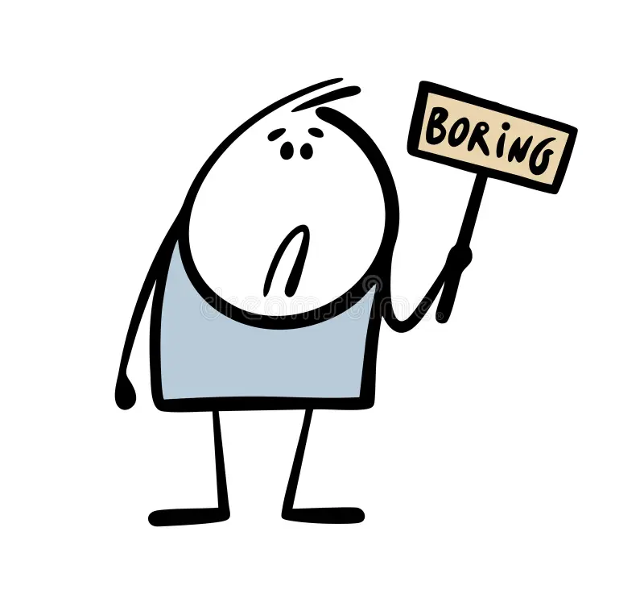

Styled with CSS
This section had CSS applied, hope you can tell the difference.
The last three movies I watched in theaters

This is the part of the page without any CSS applied. Kind of boring.
This section had CSS applied, hope you can tell the difference.